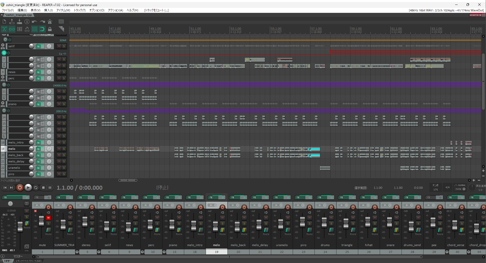
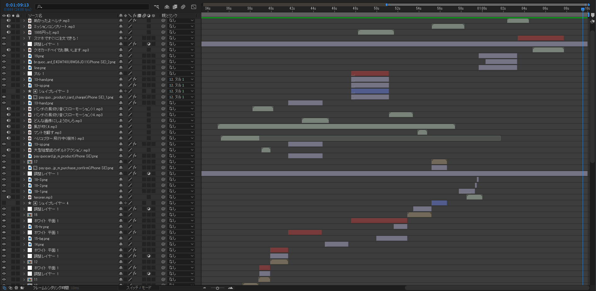
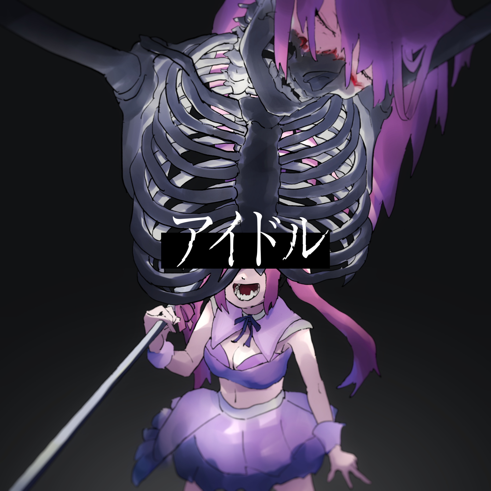
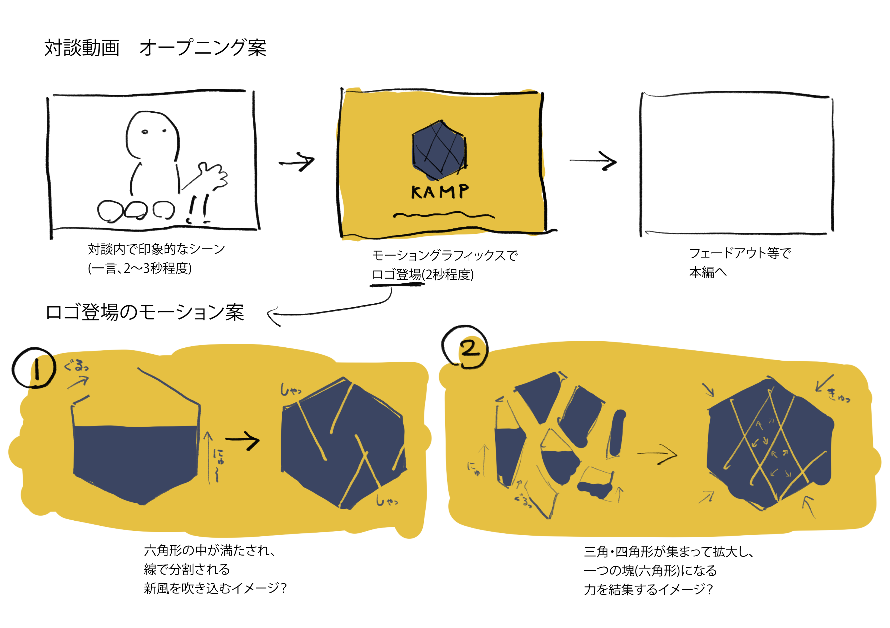

音MAD制作ハウツームービー
見ていて楽しくわかりやすい解説動画
- 作品概要
- 音MADといわれるジャンルの音楽の作り方を解説する動画です。各工程で意識すべきことを視覚的にわかりやすく表現し、実際に制作した音MADの音声に合わせてリズミカルに情報を表示することで、見ていて楽しい解説動画となるようにしました。
- 制作時期／種別
- 2022年7月／解説動画
- 使用ツール
- REAPER（音声編集）
- After Effects（動画編集）
- 動画リンク
- https://youtu.be/fRBx5Rn-WeI
企画概要として作成した画像

音声編集中の様子
ミキシングに注力しました。エフェクトを徐々に増やしていくことで効果をわかりやすくしています。
QUOカードPay CM「作戦：Quick Urgent Opayration」
ゆるくシュールな雰囲気で親しみやすさを表現
- 作品概要
- 電子決済サービス「QUOカードPay」の便利さを伝える手書きアニメです。QUOカードの堅いイメージを払拭するため、あり得ないシチュエーションを大真面目に展開し、シュールで笑える作品を目指しました。
- 制作時期／種別
- 2024年2月／CM
- 使用ツール
- CLIP STUDIO PAINT（イラスト制作）
- After Effects（撮影処理）
- 動画リンク
- https://youtu.be/Ux8htQ76r_E
動画編集中の様子
使用したイラストは全編で100枚程度ですが、Ae上での編集でコマ数を多く見せています。 セリフや効果音のバランス・距離感による大小にも気を配りました。
絵コンテ
YOASOBI「アイドル」MV企画
キャッチーな構成で曲の世界観を表現
- 作品概要
- 指定された曲のMV、その企画案となる動画を制作する課題でした。いかに工数少なく魅力的な企画とするかが要だったため、宗教画の引用や派手なカットで曲の持つ世界観を表現し、目を引く企画となるようにしました。
- 制作時期／種別
- 2023年7月／MV
- 使用ツール
- CLIP STUDIO PAINT（イラスト制作）
- After Effects（動画編集）
- 動画リンク
- https://youtu.be/m_FOA_ReGUQ
楽曲ジャケットイラスト
偶像をまとってファンに夢を与える、アイドルという仕事の美しさとおぞましさを表現しました。 広げた骸骨の両腕やマイクスタンドなど、キリストの磔刑を意識した構図となっています。
絵コンテ
自分だけが認める素敵なもの5選
被写体の形状から展開するタイポグラフィ
- 「自分だけが魅力を理解しているであろうもの」の紹介動画を制作する課題でした。写真に写っているものの形状と1から5の番号を対応させ、BGMに合わせてリズミカルに文字を展開しました。
- 2021年12月／タイポグラフィ
- AviUtl（動画編集）
- https://youtu.be/RQzDcDmBLqQ
作品概要
制作時期／種別
使用ツール
動画リンク
工夫した点
BGMはピノキオピー「神っぽいな」のインスト版を使用しました。キレのよい印象の音楽に合わせて、モーションは控えめにして色の点滅などを効果的に使用しました。
左の手も借りたい
ショッキングな展開とシュールな映像の対比
- 作品概要
- AfterEffectsのロトブラシ機能を用いた映像を制作する課題でした。人体が切断されるショッキングな描写がありますが、ドッキリ系の怖さではなく淡々とした狂気を演出したかったため、演技のコミカルさやカットの間の置き方に注意して制作しました。
- 制作時期／種別
- 2023年8月／ショートドラマ
- 使用ツール
- AfterEffects
- 動画リンク
- https://youtu.be/3LKx5teQrbA
ストーリー
料理が下手な主人公がカレーを作っていたところ、包丁で左手首を切断してしまう。すると切り離された左手がひとりでに動き出し、手際よくカレーを完成させた。これに味を占めた主人公は、右の手首まで切断して、両手たちにカレーを作ってもらうようになった。
工夫した点
家の台所の照明が非常に暗かったため、色調補正に難儀しました。撮影時のライティングや、編集時のカラーコレクションの重要性を認識する良い機会となりました。
カロリーメイトCM 30秒「きみのそばに」
カロリーメイトの妖精が机上ダンスで励ましてくれる
- 作品概要
- グループでのCM制作の課題で、進行管理・絵コンテ・一部アニメーション制作を担当しました。無声動画でもストーリーが伝わるよう、カットの順序やSE、小道具に注意しました。またカロリーメイトの無邪気さが伝わる動作になるよう気を配りました。
- 制作時期／種別
- 2021年11月／CM
- 使用ツール
- CLIP STUDIO PAINT （アニメーション）
- Premiere Pro（撮影処理）
- 動画リンク
- https://youtu.be/ZuTK7mWa2ic
工夫した点
授業内での突貫制作という制限の中で、なるべくプリントの束やパソコンの画面など小道具で状況説明しようと試みましたが、それらを印象的に映すことができず、寸劇のようなクオリティーになってしまいました。
ストーリー
仕事がうまくいかず、ため息をつく主人公。すると手足の生えたカロリーメイトがどこからか現れ、キーボードを叩き「がんばれ」と伝える。主人公は学生時代にメッセージ入りのカロリーメイトを貰ったことを思い出し、奮起してカロリーメイトをひとかじりする。
自己紹介「自堕落な休日」
MAD動画の要素を取り入れたVlog
- 作品概要
- 制作時期／種別
- 使用ツール
- 動画リンク
授業の初回で、自己紹介動画を制作する課題でした。自分の好きなふざけや音ハメの要素を全面的に取り入れて、単体で面白いと感じてもらえるような動画を制作しました。
2021年11月／Vlog
REAPER（音声編集）
AviUtl（動画編集）
テクノトイレ
苦しむ人の心情風景をテクノ音楽に合わせて表現
- 作品概要
- 音楽を制作し、それに合わせてミュージックビデオも制作しました。音数や音色に合わせて、空間の広がり・音源との距離感などを意識してカットを構成しました。
- 制作時期／種別
- 2022年5月／MV
- 使用ツール
- Ableton Live（音楽制作）
- CLIP STUDIO PAINT（イラスト制作）
- After Effects（動画制作）
- 動画リンク
- https://youtu.be/Ejtrwz-Du-k
動画完コピチャレンジ
AEに慣れるため手本を細部までトレース
- 作品概要
- 初めて触れるAfterEffectsに慣れてみるために、「Z会永絆録」という動画のモーショングラフィックスをトレースしました。実写素材は別のものに差し替え、イラスト素材はIllustratorで全て1から制作しました。フレーム単位で動きが一致するよう細部まで気を配りました。
- 制作時期／種別
- 2022年5月／トレース
- 使用ツール
- Illustrator（素材作成）
- After Effects（映像編集）
- 動画リンク
- https://youtu.be/gdcdzBFhQDQ
デフレとは？解説動画 企画コンテ
リス2匹の駄弁りからデフレを身近に感じる動画
- 作品概要
- 「経済情勢に関する言葉を、自分のことと関連付けて解説する」動画の企画コンテを制作する課題でした。他の解説の受け売りにならないよう、自分でしっかりと下調べをして言葉について理解を深めてから制作しました。
- 制作時期／種別
- 2022年6月／企画コンテ
- 使用ツール
- CLIP STUDIO PAINT
制作用メモ
景気が良いとかいろいろあるけど、専門用語のたらい回しされてよくわかんないんだよ 何で日本の賃金安いんだよ！！デフレって！？ ・リス相撲 何で日本の賃金安いんだよ→景気が悪いんだよ→なんで景気が悪いんだよ →デフレだよ→デフレって何→景気が悪いことだよ ・日本はバブル崩壊以降ずっとデフレで、最大の課題の一つ ・デフレがなぜ起こるか為替円高円安いろいろと関連付けて説明 ・ビッグマック食べてるリス バブル崩壊はなぜ起きた？ 貿易赤字でやばいアメリカが、円高ドル安にしてと要請（プラザ合意） 円高で不況になったんで金利下げ お金借りやすくなったんで工場を作るため土地にばんばん投資 需要増加で土地の値段がどんどん上がる 株にも投資しやすくなったんで値上がり 日銀「さすがに値上がりすぎなんで土地に融資させないよう金利上げるよ。 土地も課税するよ」 国民「えっ！？それならこんないらない土地手放すよ」 土地価格「ああああああ！！！！（暴落）」 企業「あああああああ！！！！！（破産）」 銀行「ああああああ！！！（貸した金が帰ってこない）」 不況から物価が安くなるデフレ突入 為替（本来の意味） 現金の盗難を防ぐため、手形や銀行振り込みなどの現金以外の方法で金銭を決済する事、輸出入で特に用いられる ふつう為替というと外国為替のことを指す 輸出入をするため、円でドルを買ったりする、2国間の異なる通貨の交換 ●円高 円の他通貨に対する相対的価値が上がること 輸入業にとっては円高だと嬉しいが輸出には不利 ●貿易収支について ・黒字（輸出の方が強い）と、もらった外貨の方が払った日本円より多い 日本円に変えたいので円の需要が高まる→円高に→ 消費者「輸入品安いやん！買ったろ」→輸入業者「仕入れるやで」→赤字よりに ・赤字だと逆に円安→黒字化 ビルトインスタビライザーという ●インフレ 物価が上がる（お金の価値が下がる）こと あるものの需要が上がる→値上げで企業が儲かる→給料が上がる→ ものがいっぱい買われる 相対的にお金の価値が下がるので円安になる ●金利 銀行が借入・貸出に自由に付けられる利率 需要が多いと上がるところは物価と似ている 中央銀行のこれの決め方でインフレ・デフレをコントロールできる （一般銀行は日銀からお金を借りてる）金利が高いと人はお金を借りなくなるので、市場に流れるお金の量が減り経済活動が停滞、インフレがおさえられる
Kanazawa Motivate Project
効果音の質感に合わせた心地よいモーション
- 作品概要
- 「未来へつなぐ行動会議」の一環として、慶應義塾大学の学生と所属ゼミで協力してKanazawa Motivate Projectという番組を制作しました。私はOPのアイキャッチ動画と、一部編集を担当しました。
- 制作時期／種別
- 2023年10月／アイキャッチ動画
- 使用ツール
- Illustrator（ロゴトレース）
- After Effects
- 動画リンク
- https://youtu.be/cYgYygNpBjo
ラフスケッチ
編集チーム内での提案用に作成したラフスケッチ。先方から頂いたロゴがAI生成によるもので、デザインコンセプトが未定だったため、こちらで2種類のコンセプトを設定して提案しています。